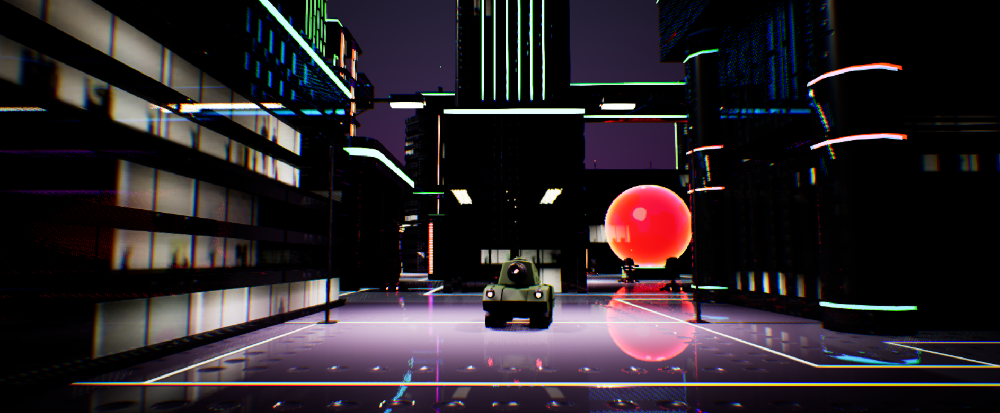
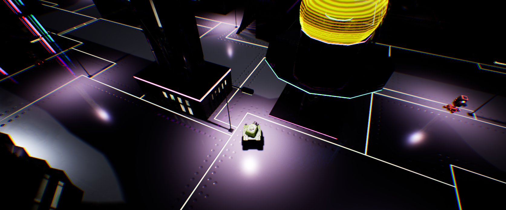

Turret Tank Blitz
A 3D, Third-Person Shooter Featuring Enemy AI
Background
Turret Tank Blitz was my first foray into an actual 3D game project.
This project had me diving deep into Unreal Engine 5, learning everything from rendering to physics to AI.
Inspired by classic tank battle games, Turret Tank Blitz is a third-person shooter where players control a tank
and must strategically maneuver through a Tron-like city while taking down enemy turrets and avoiding incoming.
The game focuses on fast-paced action while giving players the chance to shoot against AI opponents.

Initially the goal of the game was to have turrets spawn infinitely and forcing the player to survive as long as possible,
racking up a high score.
I decided it would be better to have a set number of turrets spawn and have the player destroy them all to win the game.
For now, there's only one main level. However, I plan to have multiple levels in the near future.
Technologies Used
What I Learned
Unreal Engine 5
Jumping into Unreal Engine 5 was like stepping into a whole new world—equal parts exciting and intimidating.
At first, I felt completely lost.
The sheer number of tools, settings, and systems felt overwhelming,
like standing at the base of a very steep learning curve—or cliff.
But as I spent more time with it, I started to see the magic behind Unreal Engine.
I learned to create dynamic materials, set up lighting to craft a Tron-like environment,
and fine-tune the physics engine to make tank controls feel smooth and responsive.
Debugging became a crucial skill—I can’t count how many times I fixed
(or broke) something before it finally worked.

One of my favorite discoveries was Unreal’s Blueprint system.
Initially, I was all-in with C++, but Blueprints allowed me to prototype features,
like the main menu UI, much faster.
It was a game-changer for testing and iterating on ideas quickly.
While I started as a skeptic,
I now see Blueprints as an invaluable tool I’ll continue to use in future projects.
The beauty of Unreal Engine is that it’s a complete package,
with everything you need to create a game from start to finish.
Inheritance and Polymorphism
When it comes to structuring code, inheritance and polymorphism became invaluable during this project.
It wasn’t my first time working with these concepts,
but using them in a larger, more complex project really showed me their importance in game development.
I built a base class for all tanks,
then derived specialized classes for player tanks and AI turrets.
This approach allowed me to share common functionality, like movement and health systems,
while customizing behaviors for each type.
Polymorphism was essential here—it let me override methods
for specific tank actions without duplicating code.
Plus, it was a great way in avoiding the dreaded
"spaghetti code"—where your project turns into a tangled mess of interdependent scripts.
Inheritance and polymorphism helped me keep everything organized and modular.
Enemy AI
The AI in Turret Tank Blitz was both the most challenging and rewarding part of the project.
My goal was to create turret enemies that were not only challenging but also fun.
The problem was, you can't just make the AI too smart or too dumb.
if the AI is too smart, the game feels unfair.
Too dumb, and the game gets boring.
So I had to find that sweet spot in between.
My solution was to stick to the basics.
I started simple—turrets used Unreal’s Perception System to detect the player’s tank.
I added a sphere collision component around each turret as a detection radius.
When the player entered that zone, the turret would track and fire.
While this worked, it felt predictable.
To make the AI more engaging, I relied on level design to add complexity.
Turrets were placed strategically, forcing players to use cover, maneuver carefully,
and plan their approach.
This mix of straightforward AI and thoughtful level placement kept the gameplay fun and dynamic.

Working on the AI taught me that even simple systems can feel advanced when paired with good design.
An important lesson from this that I would like to share to other developers:
complexity isn’t always the answer—sometimes,
it’s all about using the right tools in the right way.